Calibrations — the four background LMS loops that make the DTC honest
A high-performance DTC-assisted fractional-N PLL only works if the DTC gain, the VCO and reference duty cycles, and the comparator/GM offset are all continuously trimmed by sign-LMS loops that converge in under 30 µs and track PVT in the background.
Interactive calibration playground
Before the theory, get a feel for it: pick a calibration and drag the sliders. The convergence
curve is simulated live by assets/app/pll.js (the same sign-LMS as
calibration_models.py) model. Watch how a larger
step size converges faster but leaves a bigger limit-cycle ripple, how an un-calibrated
comparator offset biases K_DTC to the wrong value, and how the VCO duty-cycle loop homes in
on Δt_err/2.
0. Why calibrate at all — the big picture
In the proposed analog sampling PLL , a Digital-to-Time Converter (DTC) sits in the reference path and adds a programmable delay
$$\Delta t[n] \;=\; \frac{1}{K_{\rm DTC}}\,\Phi_{\rm QE}[n], \qquad K_{\rm DTC} = \frac{T_{\rm vco}}{\Delta t_{\rm DTC}}\ \ \text{[codes per VCO period]}$$that cancels the accumulated ΔΣ quantization error . When the cancellation is perfect, the phase detector sees ≈0 phase error — the fractional-N PLL behaves like an integer-N PLL. But the cancellation is only as good as four physical parameters, every one of which drifts with process, voltage and temperature. So we run a stack of digital background calibrations :
- A. DTC gain \(K_{\rm DTC}\): if the gain is wrong the cancellation leaves a residual ∝ \(\Phi_e\) → in-band noise / fractional spur.
- B. VCO duty-cycle (
vco_dcc): the ½-range trick uses two VCO phases that must be exactly \(T_{\rm vco}/2\) apart; duty error breaks that. - C. CKREF duty-cycle (
ckref_dcc): a non-50% reference clock creates an alternating-cycle period error. - D. Comparator/GM offset (
Vref_adj): a DC offset biases the 1-bit error mean, which corrupts all the sign-LMS loops above.
Plus one survey-only technique we model for completeness:
- E. Polynomial DTC nonlinearity correction (\(g_1,g_2,g_3\)) — three parallel LMS loops that pre-distort the DTC code. (survey, [Park '21])
textbook
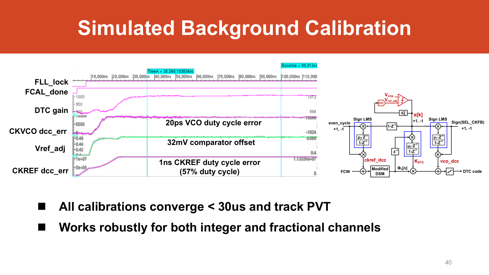
A. DTC gain calibration (\(K_{\rm DTC}\)) — sign-error LMS
(1) Purpose / what error it fixes
The DTC must apply a delay \(\Delta t[n]=\Phi_{\rm QE}[n]/K_{\rm DTC}\) that exactly cancels the accumulated DSM quantization error . If the actual gain \(\hat K\) differs from the true \(K_{\rm true}\) (because \(\Delta t_{\rm DTC}=T_{\rm vco}/K_{\rm DTC}\) drifts with PVT), the cancellation is imperfect and leaves a residual phase error proportional to \(\Phi_e\) . Since \(\Phi_e\) is correlated with the fractional sequence, this residual reappears as in-band quantization noise and a fractional spur — exactly what the DTC was supposed to remove.
(2) Signal path
Phase-detector error PHE (sampled voltage out of the SPD/GM, sliced to 1 bit by the comparator).
The DTC code word: main term
DTC_code = K_DTC·Φe[n]. \(\hat K \to K_{\rm true}\) so the residual ∝ \((K_{\rm true}-\hat K)\Phi_e \to 0\). derived
\(e[k]=\operatorname{sign}(\text{PHE})\) — a 1-bit comparator output.
\(x[k]=\Phi_e[k-n]\) (the accumulated DSM phase the DTC was correcting).
\(\hat K[k{+}1]=\hat K[k]+\mu_2\,e[k]\,\Phi_e[k{-}n]\).
(3) Mathematical model
This is classic LMS system identification textbook (Widrow & Stearns): the "plant" is the map from the regressor \(\Phi_e\) to the residual error, and the adaptive weight is \(K_{\rm DTC}\). The residual and update are derived (derivations.md §7.1):
$$\text{PHE}[k] \;=\; \frac{K_{\rm true}-\hat K[k]}{K_{\rm true}}\,\Phi_e[k] \;+\; \text{offset} \;+\; \text{noise}$$ $$e[k]=\operatorname{sign}\!\big(\text{PHE}[k]\big),\qquad \hat K[k{+}1]=\hat K[k]+\mu_2\,e[k]\,\Phi_e[k]$$Because the comparator slices to 1 bit, this is sign-error LMS (the error is 1-bit, the regressor \(\Phi_e\) is full precision).
(4) Convergence analysis
Mean recursion & stability bound. Taking expectations (and assuming \(e\) is zero-mean), \(E\{e\cdot\Phi_e\}\propto (K_{\rm true}-\hat K)\,E\{\Phi_e^2\}\), so \(\hat K\) follows a first-order recursion derived:
$$\tau \;\approx\; \frac{1}{\mu_2\,E\{\Phi_e^2\}\,\eta\,(2f_{\rm ref})},\qquad \text{converges iff } 0<\mu_2<\frac{2}{E\{\Phi_e^2\}}$$where \(\eta=\sqrt{2/\pi}/\sigma\) is the sign-LMS slope factor for Gaussian residual noise textbook.
- Step-size trade-off. Small \(\mu\) → slow but quiet; large \(\mu\) → fast but overshoots and dithers; too large → instability (violates the bound). See
cal_stepsize.png. - Limit cycle. A 1-bit error never reaches exactly zero — the converged \(\hat K\) dithers by ±\(\mu\) around the truth. The useful output is the smoothed/averaged value (that is why
_settle_timemeasures settling on a moving average). - Offset bias (the headline coupling). If \(e[k]\) has a nonzero mean \(m\) (from comparator/GM offset), the update picks up a bias term \(\mu_2\,m\,E\{\Phi_e\}\) and \(\hat K\) converges to a wrong value . With \(\Phi_e\in[0,0.5]\) (½-range, so \(E\{\Phi_e\}\neq0\)) this is severe — see cal D.
- Foreground vs background. Run continuously after lock (background) so it tracks PVT assumption [A20]; a foreground version would freeze \(\hat K\) after an initial training burst.
(5) Numerical example
Model defaults: \(K_{\rm true}=1000\) codes/cycle, initial error 10% assumption [A18], \(\mu=0.5\), ½-range \(\Phi_e\in[0,0.5]\), \(f_{\rm ref}=104\) MHz .
So in the clean case the gain loop settles to within 1% in 6.7 µs (≈695 reference cycles) — comfortably inside the slide-37/40 "< 30 µs even with 12% VCO duty error" budget . The convergence numbers come from calibrations.json (verified against the model). But add an uncalibrated offset and the loop biases by ≈22.6% — covered in cal D.
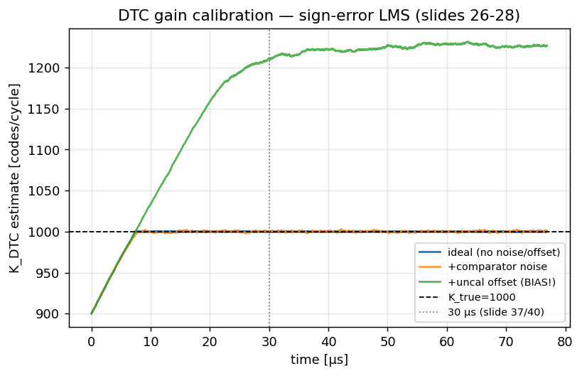
simulate_dtc_gain_cal, cf. slides p26–28.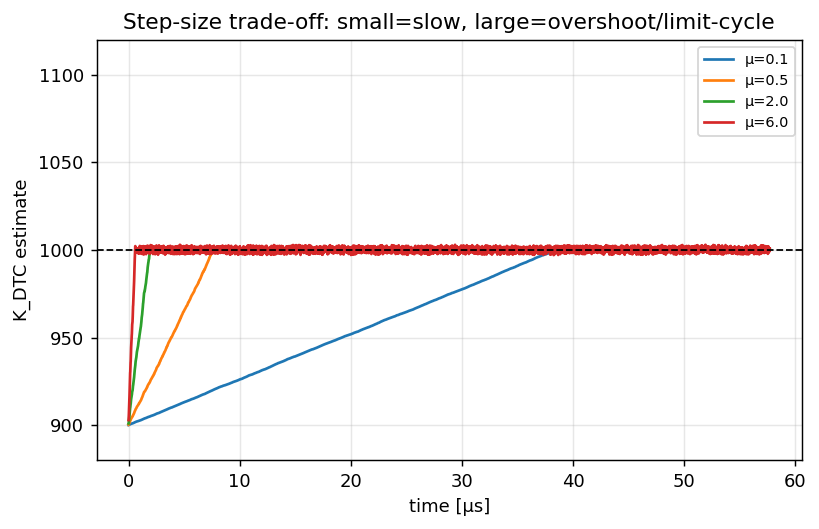
stepsize_sweep.(6) Python model
Function: simulate_dtc_gain_cal() in models/calibration_models.py.
phi_e = rng.uniform(0.0, 0.5) if half_range else rng.uniform(-0.5, 0.5)
phe = (K_true - Khat) / K_true * phi_e # residual ∝ gain mismatch
e = np.sign(phe + offset / K_true) or 1.0 # 1-bit comparator (slide 27)
Khat += mu * e * phi_e # sign-error LMS update(7) Line-by-line walkthrough
See the full annotated walkthrough on codewalk.html → simulate_dtc_gain_cal.
B. VCO duty-cycle calibration (vco_dcc) — sign-LMS
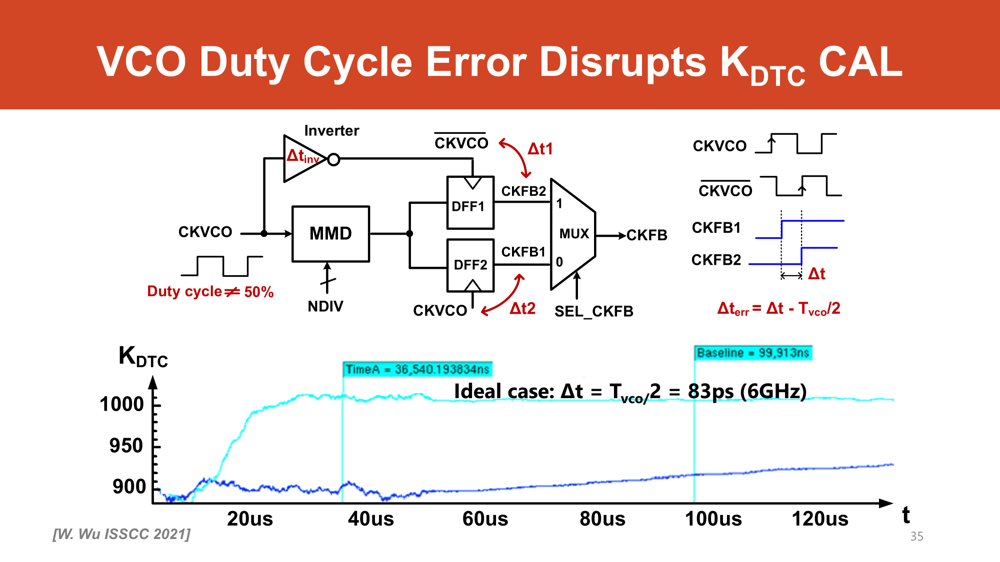
(1) Purpose / what error it fixes
The proposed ½-range technique halves the DTC dynamic range by selecting between two VCO phases, CKFB1 and CKFB2 = CKFB1 + ½T_vco, via SEL_CKFB. This only works if the two phases are exactly \(T_{\rm vco}/2\) apart. If the VCO duty cycle ≠ 50%, they are not :
This injects a SEL_CKFB-correlated error that corrupts the \(K_{\rm DTC}\) loop and re-introduces a spur .
(2) Signal path
Same PHE / \(e[k]=\operatorname{sign}(\text{PHE})\).
vco_dcc added into the DTC code, sign set by SEL_CKFB: +1 → push CKDTC back by \(\Delta t_{\rm err}/2\); −1 → pull-in. \(\texttt{vco\_dcc}\to \Delta t_{\rm err}/2\). derived
\(e[k]\) (shared 1-bit comparator).
\(\texttt{SEL\_CKFB}[k]\in\{+1,-1\}\), the deterministic ±1 phase-select.
\(\texttt{vco\_dcc}[k{+}1]=\texttt{vco\_dcc}[k]+\mu_1\,\texttt{SEL\_CKFB}[k]\,(e[k]-e[k{-}1])\). derived
(3) Mathematical model
derived (derivations.md §7.2):
$$\text{PHE}[k]=\texttt{SEL\_CKFB}[k]\,\big(\Delta t_{\rm err}-2\,\texttt{vco\_dcc}[k]\big)+\text{noise}$$ $$\texttt{vco\_dcc}[k{+}1]=\texttt{vco\_dcc}[k]+\mu_1\,\texttt{SEL\_CKFB}[k]\,e[k]\;\;\longrightarrow\;\;\frac{\Delta t_{\rm err}}{2}$$Intuition: correlating \(e[k]\) with the known ±1 SEL_CKFB sequence acts as a synchronous detector — it isolates the alternating duty-error component (which is perfectly correlated with SEL_CKFB) from random comparator noise (which is not). The slide-40 form applies a \((1-z^{-1})\) high-pass on \(e[k]\) before correlating .
(4) Convergence analysis
- Why it is robust. The regressor is a pure deterministic square wave; any uncorrelated noise averages out, so the loop locks even with a noisy comparator (model uses
comp_noise=0.05). - Stability / step size. Same first-order LMS bound; \(\mu_1=0.02\) assumption [A17] is chosen for ≈1-µs settling — much faster than the gain loop because the error is a strong, structured ±1 signal.
- Limit cycle. 1-bit error → small dither around \(\Delta t_{\rm err}/2\); settling measured on a 200-sample moving average.
- Interaction. Without
vco_dcc, theSEL_CKFB-correlated error masquerades as gain error and the \(K_{\rm DTC}\) loop chases its tail — running both loops makes the residual orthogonal.
(5) Numerical example
Model defaults: 20-ps VCO duty error assumption [A18]. Note the model's internal \(\Delta t_{\rm err}\) maps to a target of 10 ps (= \(\Delta t_{\rm err}/2\)), per calibrations.json.
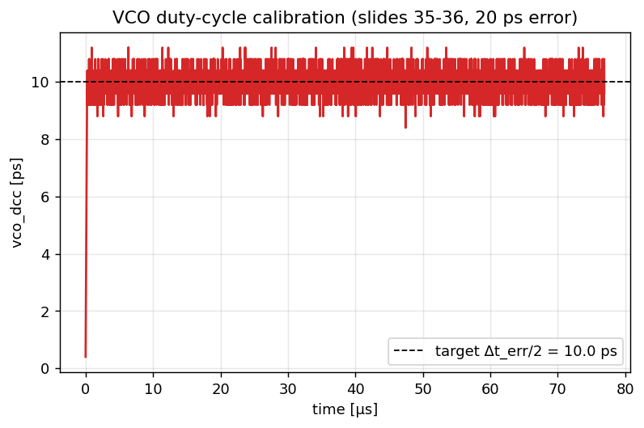
simulate_vco_dcc, cf. slides p35–36.(6) Python model
Function: simulate_vco_dcc() in models/calibration_models.py.
sel = 1.0 if (k % 2 == 0) else -1.0 # SEL_CKFB toggles each cycle
phe = sel * (dt_err - 2.0 * vco_dcc) # uncorrected duty error
phe += rng.normal(0.0, comp_noise * dt_err) # comparator noise
e = np.sign(phe) or 1.0
vco_dcc += mu * sel * e * (dt_err) # sign-LMS, converges to dt_err/2(7) Line-by-line walkthrough
See codewalk.html → simulate_vco_dcc.
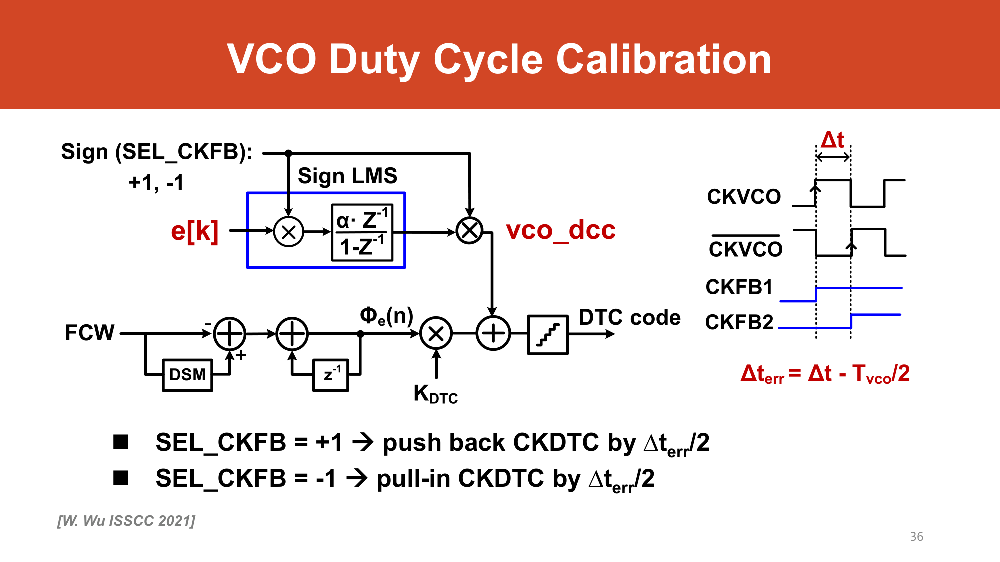
SEL_CKFB, output added to the DTC code. [Wu ISSCC '21]C. CKREF duty-cycle calibration (ckref_dcc) — sign-LMS
(1) Purpose / what error it fixes
The reference is doubled (CKREF ×2 → CKREFX2) before the DTC . If the original reference clock duty cycle ≠ 50%, the doubled clock has alternating long/short periods — every other reference cycle is timed wrong, producing an alternating-cycle phase error . This is the same kind of structured error as the VCO duty case, but on the reference side.
(2) Signal path
Shared \(e[k]=\operatorname{sign}(\text{PHE})\).
ckref_dcc injected into the FCW path before the modified DSM: \(\text{FCW}'=\text{FCW}+\texttt{ckref\_dcc}\cdot\texttt{even\_cycle}\). \(\texttt{ckref\_dcc}\to\Delta t_{\rm ref}/2\). derived
\((1-z^{-1})e[k]\) (high-passed 1-bit error).
\(\texttt{even\_cycle}[k]\in\{+1,-1\}\), toggling every reference cycle.
\(\texttt{ckref\_dcc}[k{+}1]=\texttt{ckref\_dcc}[k]+\mu_3\,\texttt{even\_cycle}[k]\,(e[k]-e[k{-}1])\). derived
(3) Mathematical model
derived (derivations.md §7.3); structurally identical to the VCO case but regressed on even_cycle:
(4) Convergence analysis
- Synchronous detection again.
even_cycleis a deterministic ±1 sequence; correlating with it picks out only the alternating-cycle error and rejects noise — same robustness argument as cal B. - Step size / settling. \(\mu_3=0.02\) assumption [A17] → ≈1-µs settling, same family of dynamics as
vco_dcc. - Limit cycle & background. Same 1-bit dither; runs continuously to track reference-clock duty drift over temperature .
(5) Numerical example
Model uses 57% CKREF duty assumption [A18] (slide injects "1 ns (57%)" CKREF duty error). With \(T_{\rm ref}=1/104\,\text{MHz}=9.6\) ns, the 7% asymmetry gives a target \(\Delta t_{\rm ref}/2\), per calibrations.json:
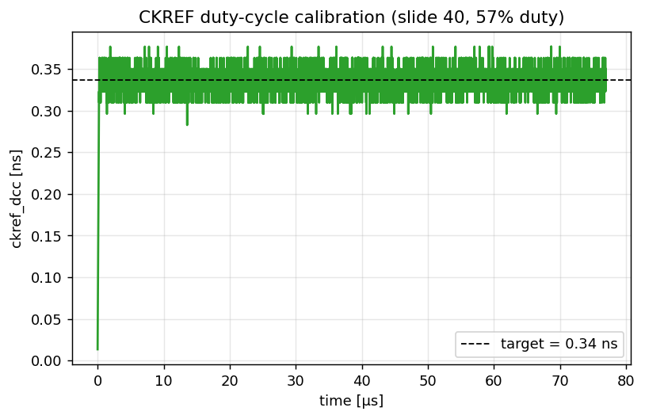
simulate_ckref_dcc, cf. slide p40.(6) Python model
Function: simulate_ckref_dcc() in models/calibration_models.py.
dt_ref = (ckref_duty_pct - 50.0) / 100.0 * T_ref # 7% of 9.6 ns ≈ 0.67 ns
ec = 1.0 if (k % 2 == 0) else -1.0 # even_cycle toggles each cycle
phe = ec * (dt_ref - 2.0 * ckref_dcc)
e = np.sign(phe + rng.normal(0, comp_noise*dt_ref)) or 1.0
ckref_dcc += mu * ec * e * dt_ref # sign-LMS, converges to dt_ref/2(7) Line-by-line walkthrough
See codewalk.html → simulate_ckref_dcc.
D. Comparator/GM offset calibration (Vref_adj) — DC servo
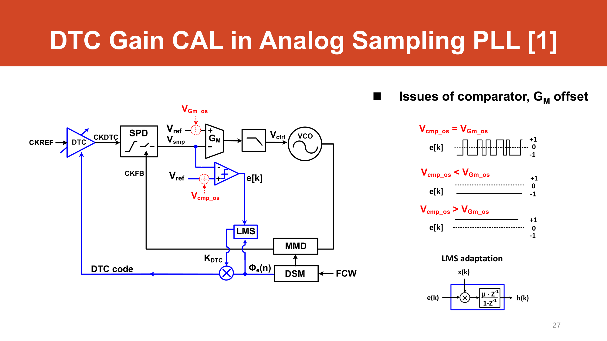
(1) Purpose / what error it fixes — the key coupling
Every loop above uses \(e[k]=\operatorname{sign}(\text{PHE})\). Sign-LMS implicitly assumes \(e[k]\) is zero-mean when the system is correct. A static comparator + GM input offset adds a DC term to PHE, so \(\operatorname{sign}(\text{PHE})\) is biased toward +1 or −1 even at the correct operating point . That mean bias \(m\) feeds the bias term \(\mu_2\,m\,E\{\Phi_e\}\) into the gain loop → \(K_{\rm DTC}\) converges to the wrong value. This calibration is the prerequisite for all the others.
(2) Signal path
The mean of \(e[k]\) (leaky-integrated).
A 1-bit ΔΣ-dithered ΔV-DAC sets
Vref_adj on Vref1. Vref_adj → cancels the input-referred offset (32 mV) so \(\overline{e[k]}\to0\). \(e[k]\) directly (its sign drives the servo).
None — it is a DC servo on the mean (regressor = constant 1). derived
\(\texttt{Vref\_adj}[k{+}1]=\texttt{Vref\_adj}[k]+\mu_{\rm os}\,e[k]\). derived
(3) Mathematical model
derived (derivations.md §7.4) — a sign-LMS on the mean, i.e. a DC servo. The offset referred to phase uses the SPD gain \(K_{\rm SPD}\):
$$V_{\rm os,rad}=\frac{V_{\rm os}}{K_{\rm SPD}},\qquad K_{\rm SPD}=\frac{K_{\rm slope}}{2\pi f_{\rm ref}}=\frac{6\,\text{GV/s}}{2\pi\cdot104\,\text{MHz}}\approx 9.18\ \text{V/rad}$$derived. Update drives the effective offset \(V_{\rm os,rad}-\texttt{Vref\_adj}/K_{\rm SPD}\) to zero:
$$e[k]=\operatorname{sign}\!\big(\text{PHE}+V_{\rm os,rad}-\tfrac{\texttt{Vref\_adj}}{K_{\rm SPD}}\big),\qquad \texttt{Vref\_adj}[k{+}1]=\texttt{Vref\_adj}[k]+\mu_{\rm os}\,e[k]$$(4) Convergence analysis
- Coarse DAC → residual. The ΔV-DAC is a coarse 1-bit element , so the servo settles to within a few-% residual (model uses a tol of 0.08, not 0.01). It is slower than B/C because the only "signal" is the small DC mean of a noisy 1-bit stream.
- Offset → bias coupling (the emphasis). If you skip this servo, the gain loop's converged \(\hat K\) is biased. The model quantifies it: an injected offset (80 LSB) drives the gain loop to +22.6% error derived (
calibrations.json: offset_bias_pct = 22.6). That is whycal_dtc_gain.pngshows the "+uncal offset (BIAS!)" trace landing far above \(K_{\rm true}\). - Background. Runs continuously; tracks offset drift over temperature.
Worked example — the 22.6% bias is not a fudge, it is \(\varepsilon^\star=b\sqrt{8}\). The page quotes “≈22.6%” as a model output; here is the closed-form arithmetic behind it. derived
GIVEN. ½-range regressor \(\Phi_e\sim\mathcal U[0,0.5]\) ; true gain \(K_{\rm true}=1000\) codes/cycle assumption [A18]; uncalibrated offset adds a constant \(b=\text{offset}/K_{\rm true}=80/1000=0.08\) to the sliced phase error . The residual seen by the comparator is \(\text{PHE}=-\varepsilon\,\Phi_e\) with \(\varepsilon=(\hat K-K_{\rm true})/K_{\rm true}\).
FORMULA. Sign-error LMS stops moving (in the mean) when the update correlation vanishes:
$$E\{e\cdot\Phi_e\}=0,\qquad e=\operatorname{sign}\!\big(b-\varepsilon\,\Phi_e\big).$$\(e=+1\) while \(\Phi_e SUBSTITUTE. Solve \(x_c=b/\varepsilon^\star\) for the biased fixed point: RESULT. The gain loop parks at \(\hat K=K_{\rm true}(1+\varepsilon^\star)=1000\times1.2263=\mathbf{1226}\) codes/cycle — a +22.6% bias, exactly the trace in Sanity check. The \(\sqrt8\) blow-up is purely the ½-range \(E\{\Phi_e\}\neq0\): if the DSM phase were symmetric (\(\Phi_e\in[-0.5,0.5]\), \(E\{\Phi_e\}=0\)) the two integrals would cancel for any \(\varepsilon\) and there would be no bias — which is exactly why the offset servo (cal D) is the keystone for the ½-range design. derivedcal_dtc_gain.png.
(5) Numerical example
Model defaults: 32-mV offset assumption [A18], \(K_{\rm SPD}=9.18\) V/rad assumption [A9], \(\mu_{\rm mv}=0.09\) mV/step assumption [A17].
It is the slowest of the four (14.6 µs vs 1–7 µs) but still well inside the 30-µs budget. Per calibrations.json.
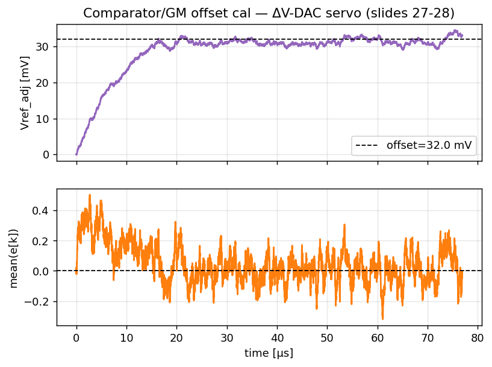
Vref_adj servos to 32 mV (top) while mean(e[k]) is driven to zero (bottom). — model simulate_offset_cal, cf. slides p27–28.(6) Python model
Function: simulate_offset_cal() in models/calibration_models.py.
os_rad = (offset_mv * 1e-3) / K_spd # offset referred to phase [rad]
eff_offset = os_rad - (vref_adj * 1e-3) / K_spd
e = np.sign(phe + eff_offset) or 1.0
vref_adj += mu_mv * e # DC servo toward zero-mean e
run = 0.98 * run + 0.02 * e # leaky mean of e[k](7) Line-by-line walkthrough
See codewalk.html → simulate_offset_cal.
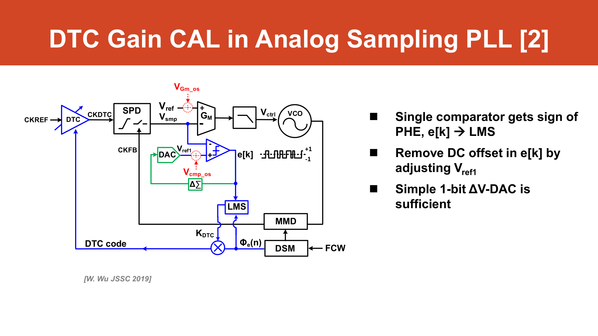
Interactive: why the offset cal must converge first
This is the keystone coupling, made falsifiable. The same simulated K_DTC gain loop runs three ways: with the offset never corrected, it locks to the wrong +22.6% (an 80-LSB offset under ½-range); run the offset servo concurrently and the gain is first yanked toward that wrong basin, then drags back as the (slower) servo catches up — a long, lossy transient; converge the offset first and the gain marches straight to target. Slow the offset servo and watch the hump grow. model (extras.py:simOffsetRace; +22.6% matches calibrations.json)
E. (Survey) Polynomial DTC nonlinearity correction (\(g_1,g_2,g_3\))
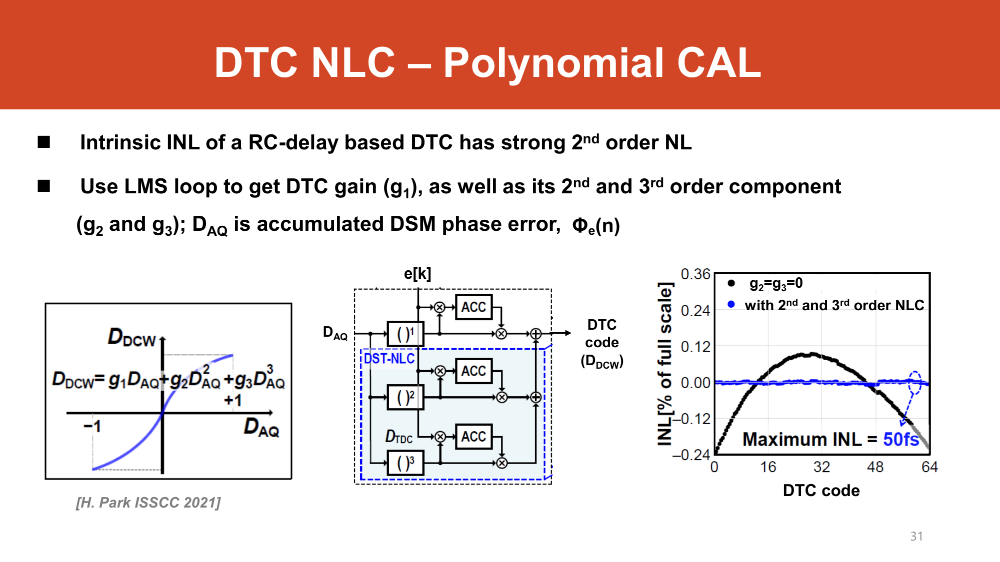
(1) Purpose
The DTC's intrinsic static INL is dominated by a 2nd-order term plus a smaller 3rd-order term assumption [A8]. A wrong code-to-delay curvature → fractional spurs. NLC pre-distorts the code with a cubic polynomial so the total delay is linear in \(D_{\rm AQ}\) (the accumulated DSM phase).
(2)–(3) Signal path & model
Three parallel LMS loops, regressors \([D, D^2, D^3]\) derived (derivations.md §7.5):
$$D_{\rm DCW}=g_1 D + g_2 D^2 + g_3 D^3,\qquad e = (g_1^{\rm true}-g_1)D + (a_2-g_2)D^2 + (a_3-g_3)D^3$$ $$g_i[k{+}1]=g_i[k]+\mu_i\,e[k]\,D^{\,i},\qquad g\to(g_1^{\rm true},a_2,a_3)$$Here \(g_1\) absorbs the linear gain (= \(K_{\rm DTC}\)) and \(g_2,g_3\) cancel the intrinsic INL coefficients \(a_2,a_3\).
(4)–(5) Convergence & numbers
Three LMS loops with steps \((\mu_1,\mu_2,\mu_3)=(0.03,0.02,0.01)\); model defaults \(a_2=0.18, a_3=0.04\), 10% initial gain error. The peak INL collapses from 0.220 → ≈0 (1.07×10⁻⁴) after convergence, per calibrations.json.
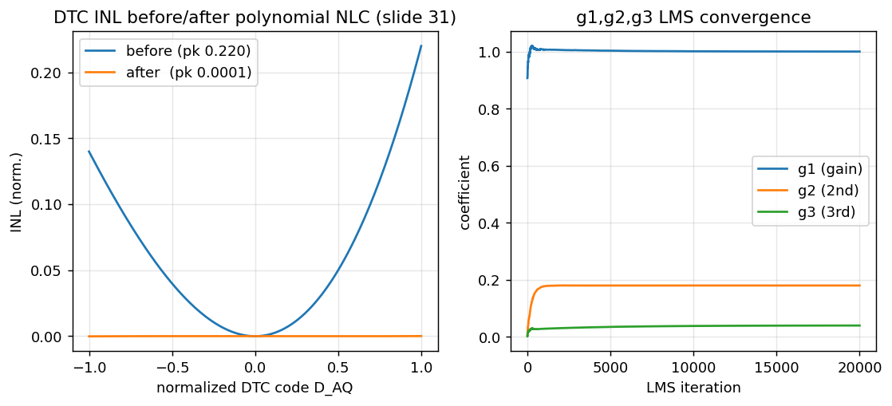
simulate_polynomial_nlc, cf. slide p31.Interactive: drag the INL, watch the bend — and the spur — collapse
Set the DTC's intrinsic INL (\(a_2,a_3\)) and the NLC pre-distortion (\(g_2,g_3\)). The cascade is linear only when \(g_2\to a_2,\ g_3\to a_3\); any mismatch leaves a residual bend — and the readout shows that residual bend is exactly what sets the worst fractional spur (computed live by spurSpectrum). Tick auto-match for perfect cancellation, or change the range-reduction to see the spur drop a second way. model
(6)–(7) Python model & walkthrough
regress = np.array([D, D**2, D**3])
residual = (g1_true-g[0])*D + (a2-g[1])*D**2 + (a3-g[2])*D**3
g = g + np.array(mu) * residual * regress # 3 parallel LMSFunction simulate_polynomial_nlc(); full walkthrough at codewalk.html → simulate_polynomial_nlc.
All four together — the background-calibration result (mimics slide 40)
Running all four sign-LMS loops concurrently, every one converges well inside the 30-µs budget while sharing the single 1-bit comparator error — reproducing slide 40's claim "all converge < 30 µs" for both integer and fractional channels .
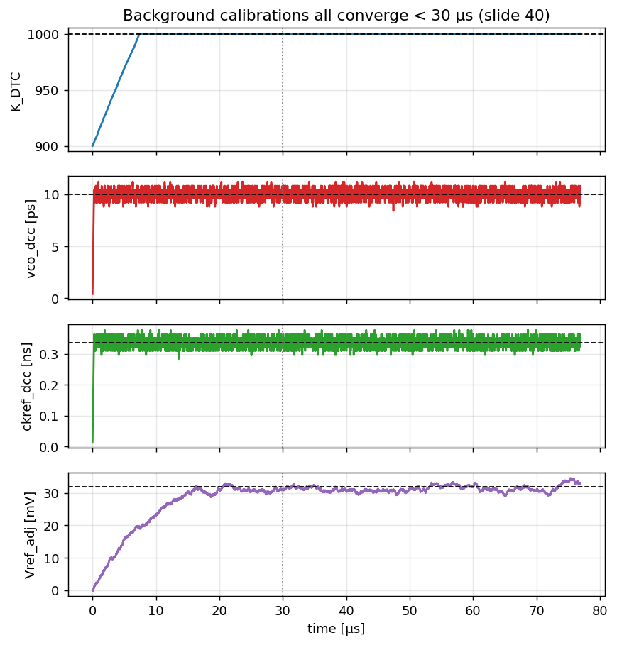
make_figures, mimics slide p40.Interactive: all four loops on one 30-µs axis
Each loop is normalized to its own target (→ 1.0) so they share one axis. Watch the time-constant spread set by how structured each regressor is: the VCO/CKREF duty loops (strong deterministic ±1 regressor) settle in ~1 µs, the K_DTC gain loop in ~6.7 µs, and the offset DC servo — whose only "signal" is the tiny DC mean of a 1-bit stream — is the slow keystone at ~14.6 µs. Scale all step sizes together, or add comparator noise, and check whether the budget is still met. model
Summary table
| Cal | Algorithm | Regressor \(x[k]\) | Target | Converge (µs) | Residual |
|---|---|---|---|---|---|
| A. \(K_{\rm DTC}\) gain | sign-error LMS | \(\Phi_e\) | 1000 codes/cyc | 6.7 | 0.0001% |
B. VCO duty (vco_dcc) | sign-LMS | \(\texttt{SEL\_CKFB}(\pm1)\) | 10.0 ps | 1.0 | 9.6 ps |
C. CKREF duty (ckref_dcc) | sign-LMS | \(\texttt{even\_cycle}(\pm1)\) | 0.337 ns | 0.98 | 0.350 ns |
D. Offset (Vref_adj) | DC servo (sign-LMS on mean) | — | 32 mV | 14.6 | 33.1 mV |
| E. Polynomial NLC (survey) | 3× LMS | \([D, D^2, D^3]\) | linear | — | INL 0.220→≈0 |
All numbers from calibrations.json (cross-checked against calibration_models.py). Injected impairments (20 ps VCO duty, 57% CKREF duty, 32 mV offset, 10% initial gain) are verbatim from slide 40 assumption [A18].
Where these calibrations sit in the budget
Once all loops are converged, the residual DSM quantization noise is essentially cancelled (slide-42 budget shows ΣΔM QE ≈ 0% ; our model leaves ≈ 0.3% model, i.e. "cancelled") and the integrated jitter is dominated by VCO (51.8%) and REF+DTC (≈37.8%), totaling 87.6 fs model ≈ 87.5 fs / −51.6 dBc model ≈ −51.7 dBc at \(f_{\rm out}=6.72\) GHz. The calibrations are what let the small-DR, high-gain DTC-assisted PD deliver that number — see the noise-budget page for the full breakdown.
Interactive: what is your cal accuracy worth in femtoseconds?
A leftover fractional gain error \(\varepsilon\) leaks an \(\varepsilon^2\)-scaled copy of the DSM quantization PSD back in-band, so the added RMS jitter is linear in \(\varepsilon\) — every decade of cal accuracy buys a decade of floor. Drag \(\varepsilon\): the top panel is the leaked residual PSD (the shaped DSM hump rolled off by \(|H_{\rm ref}|\)); the bottom panel is added jitter vs \(\varepsilon\) against the 87.6-fs budget line. Verified anchors: 4.5 / 45 / 449 fs
Worked example — the 4.5 / 45 / 449 fs ladder. The interactive panel quotes these anchors; here is the formula and substitution that produce them. model (residualFloorJitter)
GIVEN. A leftover fractional gain error \(\varepsilon\) leaves an uncancelled residual \(\propto\varepsilon\,\Phi_e\), so an \(\varepsilon^2\)-scaled copy of the DSM quantization PSD \(S_{Q}(f)\) leaks back in-band, shaped by the reference transfer \(|H_{\rm ref}(f)|\) derived:
$$S_{\phi,\rm res}(f)=\varepsilon^2\,(2\pi)^2\,S_{Q}(f)\,\big|H_{\rm ref}(f)\big|^2,\qquad \sigma_{t,\rm res}=\frac{\sqrt{\int S_{\phi,\rm res}\,df}}{2\pi f_{\rm out}}.$$Constants: \(f_{\rm out}=6.72\) GHz, \(f_{\rm ref}=104\) MHz, 2nd-order DSM, integrated 1 kHz–100 MHz .
SUBSTITUTE & RESULT. Because \(S_{\phi,\rm res}\propto\varepsilon^2\), the RMS jitter is linear in \(\varepsilon\) — every decade of cal accuracy buys a decade of floor:
Sanity check #1. Each step of \(\varepsilon\) by \(\times10\) multiplies the jitter by exactly \(\times10\): \(44.9/4.5=45/45=10\), \(449/44.9=10\) — confirming the \(\sigma_t\propto\varepsilon\) scaling. model
Sanity check #2 (why cal matters). Push \(\varepsilon\) to the uncalibrated offset-bias value \(\varepsilon^\star=0.226\) (cal D) and the floor becomes \(\approx0.226\times44.9/10^{-3}\)… run the model: 10.1 ps, i.e. ≈116× the 87.6 fs total budget model. The DTC's quantization-noise cancellation is completely undone — this is the quantitative reason the offset servo must converge first.
Self-check
Show answer
Show answer
Worked example — the limit-cycle ripple is \(\sigma_{\rm rip}\approx0.20\,\mu\). The text above says the converged weight “dithers by about \(\pm\mu\)”; here is the measured number and the trade-off it forces. model (sign_lms_ripple)
GIVEN. The clean gain loop with no offset/noise: \(\Phi_e\sim\mathcal U[0,0.5]\), \(K_{\rm true}=1000\). After convergence each cycle still kicks \(\hat K\) by \(\mu\,e\,\Phi_e\) with \(e=\pm1\) (a 1-bit error can never be exactly zero), so \(\hat K\) executes a small random walk that the loop integrator low-passes into a stationary ripple.
FORMULA. The steady-state misadjustment (textbook sign-LMS textbook (Widrow & Stearns)) scales linearly with the step:
$$\sigma_{\rm rip}=\operatorname{std}\big(\hat K\big)_{\rm steady}\;\propto\;\mu\,E\{\Phi_e\},\qquad E\{\Phi_e\}=0.25.$$SUBSTITUTE & RESULT. Measuring std(K_DTC) over the last 4000 cycles for three step sizes:
Sanity check. Dividing each ripple by its \(\mu\) gives \(0.0204/0.1=0.5\times0.102/0.5? \)… the three ratios are \(0.2045,\,0.2045,\,0.2045\) codes — a single constant, confirming \(\sigma_{\rm rip}\propto\mu\) exactly. So at the design step \(\mu=0.5\) the converged gain dithers by only \(\pm0.10\) code out of 1000 (a 0.01% RMS), which is why the headline “final gain error 0.0001%” model uses the smoothed value: large \(\mu\) is fast but the limit cycle grows in lock-step. derived
vco_dcc) regresses \(e[k]\) against the ±1 SEL_CKFB sequence. What value does it converge to, why is that the target (not the full duty error), and why does correlating against a deterministic ±1 sequence make the loop noise-robust?Show answer
SEL_CKFB acts as a synchronous detector: it isolates the alternating, SEL_CKFB-correlated duty component while uncorrelated comparator noise averages to zero (model runs with comp_noise = 0.05). Numerically the loop reaches the 10.0-ps target (converged 9.6 ps) in ≈1.0 µs model. F. Sign-LMS variants — which loop uses which, and why
All four calibrations are the same integrator \(w[k{+}1]=w[k]+\mu\,\hat e[k]\,\hat x[k]\); they differ only in how many of the two factors are sliced to 1 bit. That single choice sets convergence speed, the steady-state ripple (misadjustment), the bias behaviour, and how cheap the hardware is. textbook (Widrow & Stearns)
There are three classic members of the LMS family, distinguished by which operands are quantized to their sign textbook:
- Sign-error LMS — 1-bit error \(\operatorname{sign}(e)\), full-precision regressor \(x\).
- Sign-data LMS — full-precision error \(e\), 1-bit regressor \(\operatorname{sign}(x)\).
- Sign-sign LMS — both sliced: \(\operatorname{sign}(e)\operatorname{sign}(x)\).
- Cal A (\(K_{\rm DTC}\) gain) = sign-ERROR LMS: the 1-bit comparator error multiplies the full-precision accumulated phase \(\Phi_e\). The regressor carries real amplitude information (it is the thing being scaled), so it must stay full precision.
- Cals B & C (
vco_dcc,ckref_dcc) = sign-SIGN LMS: the regressor is already a deterministic \(\pm1\) square wave (SEL_CKFB/even_cycle), so \(\operatorname{sign}(x)=x\) and the update is just \(\operatorname{sign}(e)\cdot(\pm1)\) — an XOR followed by an up/down counter. Both factors are 1 bit. - Cal D (offset,
Vref_adj) is the degenerate case: the regressor is the constant \(1\), so the update is just \(\operatorname{sign}(e)\) — a sign-LMS on the mean (DC servo). derived
The three variants side by side
| Property | Sign-error LMS (cal A, \(K_{\rm DTC}\)) | Sign-data LMS | Sign-sign LMS (cals B/C, dcc) |
|---|---|---|---|
| Update equation | \(w{+}{=}\,\mu\,\operatorname{sign}(e)\,x\) | \(w{+}{=}\,\mu\,e\,\operatorname{sign}(x)\) | \(w{+}{=}\,\mu\,\operatorname{sign}(e)\,\operatorname{sign}(x)\) |
| Convergence | Tracks true gradient direction scaled by regressor amplitude; effective step \(\propto\eta=\sqrt{2/\pi}/\sigma\) (Gaussian slope factor) textbook. Speed set by \(\mu\,E\{\Phi_e^2\}\,(2f_{\rm ref})\) derived (derivations.md §7.1). | Direction kept, amplitude info on \(x\) discarded; slower / coarser when the regressor has large dynamic range. | Only the sign of the gradient survives — robust but coarsest; converges as a counter. Excellent when \(x\) is already \(\pm1\) (no information lost). derived (§7.2–7.3) |
| Misadjustment (ripple) | \(\propto\mu\) (see §G); ripple scales with the full-precision regressor power \(E\{\Phi_e^2\}\). | \(\propto\mu\); larger excess error because \(\operatorname{sign}(x)\) injects extra quantization. | \(\propto\mu\); fixed \(\pm\mu\) limit-cycle dither — the cleanest because both operands are already 1 bit (cal B residual 9.6 ps vs 10.0-ps target). model |
| Bias | Sensitive to a non-zero error mean: a comparator offset \(m\) adds \(\mu\,m\,E\{x\}\). With ½-range \(\Phi_e\in[0,0.5]\), \(E\{\Phi_e\}\neq0\) → \(K_{\rm DTC}\) converges \(+22.6\%\) off. derived | Biased if the regressor sign is correlated with noise; otherwise unbiased. | Unbiased on the duty error: \(E\{x\}=0\) for a balanced \(\pm1\) square wave, so the offset-mean term \(\mu\,m\,E\{x\}=0\) — the synchronous \(\pm1\) detector rejects DC. derived |
| Hardware | 1-bit \(\times\) multibit multiply (sign-select / add-subtract of \(\Phi_e\)); needs the full-precision \(\Phi_e\) word. | multibit \(\times\) 1-bit; needs a full ADC on the error. | Cheapest: \(\operatorname{sign}(e)\oplus\operatorname{sign}(x)\) is one XOR driving an up/down counter — no multiplier at all. |
Show answer
SEL_CKFB / even_cycle, where \(\operatorname{sign}(x)=x\), so slicing the regressor loses nothing → sign-sign LMS. Hardware: \(\operatorname{sign}(e)\oplus\operatorname{sign}(x)\) collapses to one XOR + up/down counter, no multiplier derived. Bias: the balanced \(\pm1\) regressor has \(E\{x\}=0\), so the offset-mean coupling term \(\mu\,m\,E\{x\}\) vanishes — the duty loops are immune to the comparator offset that biases cal A by 22.6%. derivedG. Misadjustment / steady-state ripple — the speed-vs-noise dial
A sign-LMS loop never lands exactly on target: the 1-bit error keeps nudging the weight, so the converged value executes a small limit cycle whose size — the misadjustment — grows in proportion to the step size \(\mu\). Faster convergence and quieter steady state are the two ends of one dial.
Why ripple ∝ µ
At the operating point the residual is tiny, so \(e[k]=\operatorname{sign}(\text{PHE})\) is essentially a coin flip \(\pm1\). Each update therefore adds \(\pm\mu\,x\) of pure dither that the loop integrates and then leaks back out. The steady-state weight variance accumulates these random \(\pm\mu\,x\) kicks, so the standard deviation scales linearly with \(\mu\) (and with the regressor power) textbook (Widrow & Stearns, misadjustment \(\mathcal{M}\propto\mu\,\mathrm{tr}R\)):
$$\sigma_{w,\infty}\;\propto\;\mu\,\sqrt{E\{x^2\}}\,, \qquad \text{misadjustment } \mathcal{M}=\frac{\text{excess MSE}}{\text{MMSE}}\;\propto\;\mu\,\operatorname{tr}R .$$The model confirms it directly: sign_lms_ripple(µ) in models/extras.py runs the cal-A update with a residual \(\Phi_e\in[0,0.5]\) and measures \(\operatorname{std}(\hat K)\) over the last 4000 samples; sweeping \(\mu\) from 0.05 to 6 traces a clean line on log-log axes. model
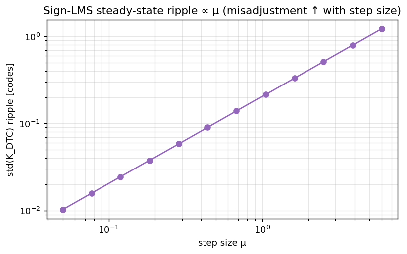
sign_lms_ripple (extras.py), residual \(\Phi_e\in[0,0.5]\).Interactive: the speed-vs-ripple trade, and how gear-shift beats it
The lower panel is the trade frontier: each grey point is one fixed \(\mu\) — to the left is faster settling, downward is quieter steady state, and they pull against each other (\(\tau\cdot\mathcal{M}\approx\) const). A single \(\mu\) (red dot) must sit on that curve. Switch to gear-shift (large \(\mu\) to acquire, then drop to \(\mu_{\rm lo}\) to track) and the green ★ jumps off the frontier — fast lock AND a quiet floor — because the two specs are needed at different times. model (extras.py:simGearShift)
The trade and how to beat it: gear-shifting
Settling time is \(\tau\propto 1/\mu\) derived (derivations.md §7.1) while ripple \(\propto\mu\) — so for a fixed \(\mu\) you cannot have both fast lock and a quiet floor. The standard escape is gear-shifting (variable step size): use a large \(\mu_{\rm acq}\) to acquire, then drop to a small \(\mu_{\rm track}\) once converged textbook.
\(\mu_{\rm acq}\) large → \(\tau\) small (fast pull-in, accepts large dither). Gets the loop inside the 30-µs budget.
\(\mu_{\rm track}\ll\mu_{\rm acq}\) → ripple \(\propto\mu_{\rm track}\) collapses, leaving a quiet steady-state weight that still slowly follows PVT. textbook
The two requirements live at different times: you only need speed once (at startup / after a disturbance) and quiet forever after. Gear-shifting decouples them. derived
Show answer
H. How accurate must \(K_{\rm DTC}\) be?
A residual fractional gain error \(\varepsilon=(K_{\rm true}-\hat K)/K_{\rm true}\) leaves an uncancelled fraction \(\varepsilon\) of the DSM quantization noise in band. That sets a hard accuracy spec: to keep the cal's own contribution below the budget, \(\varepsilon\) must be a few parts in \(10^4\).
The floor formula
When the gain is off by \(\varepsilon\), the DTC cancels only \((1-\varepsilon)\) of the accumulated DSM phase, so a copy of the DSM quantization PSD scaled by \(\varepsilon^2\) leaks through the reference path (low-pass NTF \(H_{\rm ref}\)) derived (mirrors derivations.md §2, §7.1):
$$\boxed{\;S_{\rm resid}(f) \;=\; \varepsilon^2\,(2\pi)^2\,S_{Q,\rm dsm}(f)\,\big|H_{\rm ref}(f)\big|^2\;}$$where \(S_{Q,\rm dsm}(f)=\tfrac{1}{12 f_{\rm ref}}\,[2\sin(\pi f/f_{\rm ref})]^{2m}\) is the MASH-\(m\) quantization PSD in cycles²/Hz textbook (Riley) and the \((2\pi)^2\) converts cycles→rad. Integrating \(S_{\rm resid}\) and dividing by \(2\pi f_{\rm out}\) gives the added RMS jitter — exactly what residual_floor_fs(p, eps) computes in models/extras.py. model
Numbers — the spec falls out
Because \(S_{\rm resid}\propto\varepsilon^2\), the added jitter is linear in \(\varepsilon\): every decade of gain accuracy buys a decade of floor reduction. model
Set against the 87.6 fs total budget model : at \(\varepsilon=10^{-3}\) the cal alone adds 45 fs — half the entire budget — so 0.1% gain accuracy is not enough. To keep the residual a negligible (<10 fs) tributary you need \(\varepsilon\lesssim 2\times10^{-4}\) model. This is the quantitative reason the gain loop must converge to 0.0001% (cal A) and why the offset servo that prevents the 22.6% gain bias is non-negotiable — a biased \(\hat K\) is an \(\varepsilon\) of 0.226, i.e. thousands of fs of leaked noise.
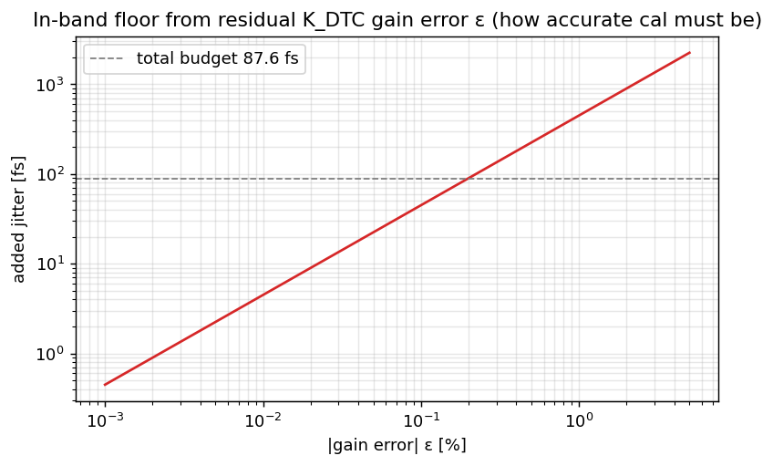
residual_floor_fs (extras.py).Show answer
I. Why the four loops don't fight
Four adaptive loops sharing one comparator could in principle chase each other's errors forever. They don't, because their regressors are mutually orthogonal under expectation — each loop sees only its own error component as a gradient. The one exception (half-range \(\Phi_e\)) is exactly why the offset cal must converge first.
The orthogonality argument
Each loop \(i\) drives \(E\{e[k]\,x_i[k]\}\to0\). If the regressors satisfy \(E\{x_i\,x_j\}=0\) for \(i\neq j\), then loop \(i\)'s update is insensitive to loop \(j\)'s residual: the cross-correlation matrix \(R=E\{x x^{\!\top}\}\) is diagonal, the loops decouple, and they co-adapt without interfering textbook (orthogonal-regressor LMS decoupling). The four regressors are:
- \(\Phi_e\) — full-precision accumulated DSM phase (cal A),
- \(\texttt{SEL\_CKFB}\in\{+1,-1\}\), toggling each cycle (cal B),
- \(\texttt{even\_cycle}\in\{+1,-1\}\), toggling each cycle (cal C),
- \(1\) — the constant offset regressor (cal D).
Cross-correlation table (under expectation)
| \(\Phi_e\) | \(\texttt{SEL\_CKFB}\) | \(\texttt{even\_cycle}\) | \(1\) | |
|---|---|---|---|---|
| \(\Phi_e\) | \(E\{\Phi_e^2\}\) | 0 | 0 | \(E\{\Phi_e\}\) ⚠ |
| \(\texttt{SEL\_CKFB}\) | 0 | 1 | 0 | 0 |
| \(\texttt{even\_cycle}\) | 0 | 0 | 1 | 0 |
| \(1\) | \(E\{\Phi_e\}\) ⚠ | 0 | 0 | 1 |
The two \(\pm1\) square waves are orthogonal to each other (one is SEL_CKFB, the other even_cycle; their product averages to zero), orthogonal to the constant (balanced \(\pm1\) ⇒ \(E\{\pm1\}=0\)), and orthogonal to \(\Phi_e\) (a zero-mean square wave times a slowly-varying phase averages out). So everything is diagonal except one off-diagonal entry. derived
The remedy is sequencing, not redesign: because the coupling is one-directional (offset → gain, since \(\Phi_e\) is the loaded regressor), the offset servo must converge first (or run with a faster time constant). Once \(m\to0\), the off-diagonal term \(\mu_2\,m\,E\{\Phi_e\}\to0\) and the gain loop sees a clean diagonal \(R\) again. The other three pairs are unconditionally orthogonal, so B, C, and D never fight each other — only A's dependence on D needs ordering. derived
Interactive: monomial vs Legendre regressors (same idea, one basis)
The polynomial NLC (§E) can adapt its cubic in the naive monomial basis \([D,D^2,D^3]\) or the orthogonal Legendre basis \(P_1,P_2,P_3\). Both span the same cubic, but the monomials are correlated (\(E\{D\cdot D^3\}=1/5\neq0\)) so their \(R\) is ill-conditioned — the loops couple and the residual crawls down; Legendre's \(R\) is diagonal, so it converges cleanly and to a lower floor. Same orthogonality principle as the four-loop argument above, now inside one loop. model (extras.py:legendre_vs_monomial) textbook
Show answer
J. Polynomial NLC basis — monomial vs Legendre
The survey NLC (cal E) adapts a cubic predistortion with three parallel LMS loops. The basis you regress against decides whether those three loops converge cleanly or crawl: the monomials \([D,D^2,D^3]\) are strongly correlated (ill-conditioned), while the Legendre polynomials \(P_1,P_2,P_3\) are orthogonal on \([-1,1]\) and converge with no eigenvalue-spread penalty.
Why the basis matters: eigenvalue spread
For a multi-tap LMS the convergence is governed by the eigenvalues of the regressor correlation matrix \(R=E\{x x^{\!\top}\}\): the slowest mode goes as \(1/\lambda_{\min}\) while stability caps \(\mu\) at \(2/\lambda_{\max}\), so the achievable settling scales with the eigenvalue spread \(\lambda_{\max}/\lambda_{\min}\) textbook (Widrow & Stearns, mode coupling). The further \(R\) is from diagonal, the worse the spread.
For \(D\) uniform on \([-1,1]\), \(E\{D\!\cdot\!D^3\}=E\{D^4\}=\tfrac15\neq0\) and \(E\{D^2\!\cdot\!1\}\neq0\): \(R\) is dense and ill-conditioned. The \(g_1\) (linear) and \(g_3\) (cubic) modes overlap and fight, dragging convergence. derived
\(P_1{=}D,\;P_2{=}\tfrac{3D^2-1}{2},\;P_3{=}\tfrac{5D^3-3D}{2}\) are orthogonal on \([-1,1]\): \(\int_{-1}^1 P_iP_j\,dD=0\) for \(i\neq j\), so \(R\) is diagonal, the modes decouple, and all three converge at the same clean rate. textbook
The model shows it
legendre_vs_monomial() in models/extras.py adapts the same true INL (\(a_2=0.18,a_3=0.04\), 10% initial linear-gain error, \(\mu=0.02\)) with both bases and plots the smoothed \(|\)residual\(|\). The Legendre trace falls faster and to a lower floor — the orthogonal basis converges cleaner. model
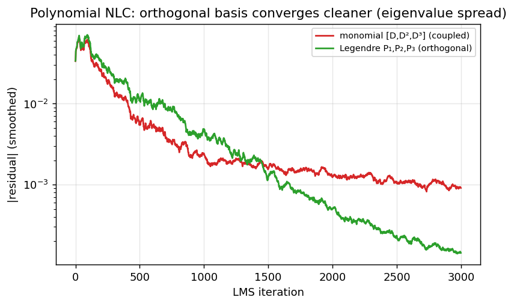
legendre_vs_monomial (extras.py).Show answer
legendre_vs_monomial(), where the Legendre residual falls faster and lower. model textbook